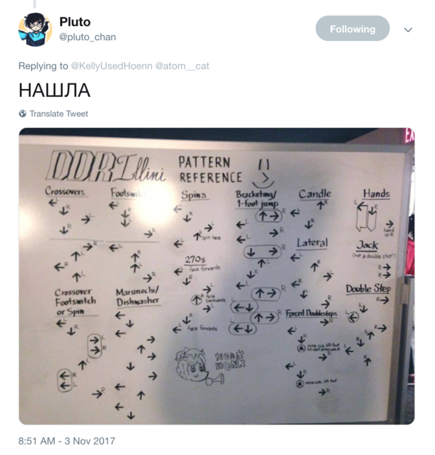

The pattern reference poster started as an illustration on a whiteboard in the Illini Union Rec Room in 2015. It was made by Tana, a senior member of DDRIllini, probably for the purpose of explaining 4-panel patterning to freshmen in the club.
Several years later, we saw it circulating around Russian dance game Twitter, and cited in an academic paper (ctrl f "honk honk"). Some of the Russians in the Twitter thread ended up traveling to RIP11 (2019), so Tana decided to make a poster verion of the whiteboard.
We got lots of requests, so we made the poster available in a digital format so you can print your own. You can get it at Gumroad.